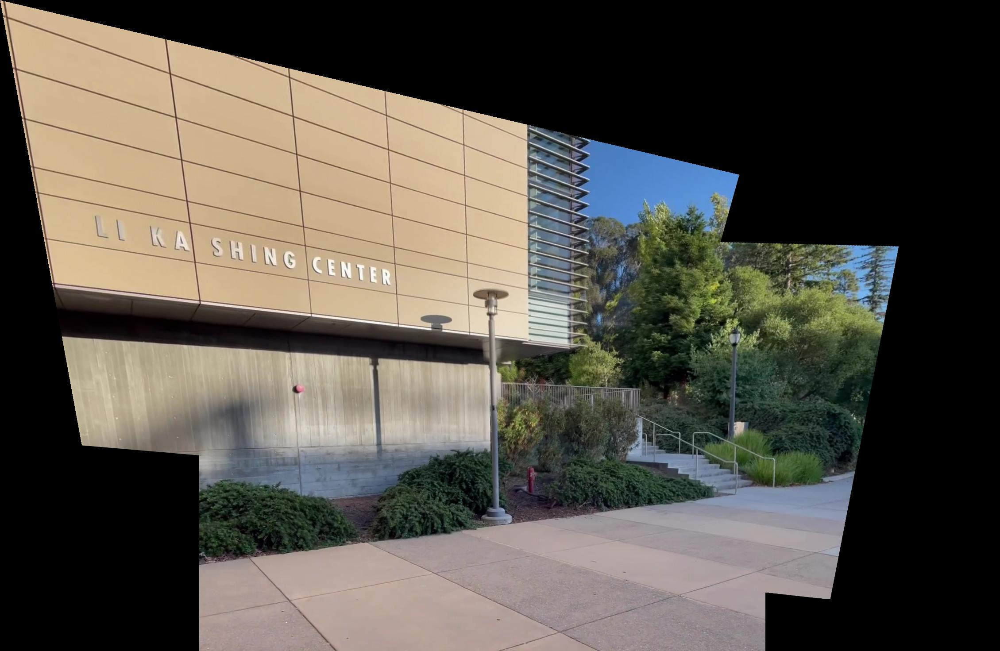

We take a few photos while fixing the center of projection, and rotating the camera while taking photos.
Below are some examples which were used for part A.
In order to compute for the homographies, we set up a system of equations, using H * [x, y, 1] = [wx', wy', w]. Given this, we can solve for H, which has 8 unknowns.
To do so, we select at least 4 correspondences between two images, and use least squares to solve for the coefficients.
For this, we first use the homography matrix H on each of the corners to find the structure of the resulting warp, and create a bounding box for it.
We then warp, using the inverse warp from the points in the quadrilateral, and use interpolation to get the pixel values of the resulting image. (This also
has to be translated by the upper left corner to go to 0, 0).
Below are some results, as well as the result of rectifying a few different things.
First, we have to warp one image onto the other. From there, we need to specify the size of the resulting bounding box for both images. We do this by
transforming one of the corresponding points using H, and find how much it is translated by. Then we specify the size of the resulting image by
taking the minimum and maximum of the resulting corners, as well as get how much we need to translate the indices by for the top left corner, which gives us
where to put the images. From there, we first create a mask using the distance from the image pixels to the borders using cv2.distanceTransform (which gives the distance to the
nearest white pixel). Then, we create a gaussian and laplacing pyramid (using project 2 code). We merge it in a similar way, but we simply use the average of the
distance mask to merge each layer of the pyramid. Placing these pixels onto the final grid gives us the resulting mosaic image.
Below are the images as well as their resulting mosaic image.

We use the provided harris corner code to detect potential corners in the image. However, the number of potential corners generated is too much, so the next few steps aim at reducing and matching the appropriate corners between images to warp and merge them together, using our previous steps, automatically.
For this, we essentially search over each corner, and find the minimal radius which results in a pixel response that "supresses" this corner, as in its response is less than 0.9 the response of this other pixel. Then, we take the top few points, which we choose to be 500. This helps to provide a more even distribution of corners throughout the image, as well as significantly reducing the total number of them, and also selects ones that tend to have a stronger response.
We take a 40x40 patch around each of the pixels chosen by the ANMS process, and downscale this to an 8x8 grayscale patch (and appropriately low passing it to prevent aliasing). We also normalize these patches to have 0 mean and 1 standard deviation. Once we have the patches for each corner, in each image. We do feature matching. This is done by first computing the L2 distance between the flattened features between features in image 1 and 2. Then, for each corner in image 1, we look for the nearest 1 and 2 neighbors in image 2. Then we compute the ratio between the squared distance between the 1st and 2nd neighbor, and if this is above a certain threshold, we consider this to be a match. Just in case, we also do this in the reverse direction, and see if this matches in the other direction as well. The idea behind this is that, the difference between the 1st and 2nd neighbor for correct matches should have a low ratio, whereas for false matches, the ratio should be closer to 1. We choose a threshold of 0.8 for this. This helps to remove a lot of the extra outliers before we do RANSAC, as well as helping to pair corners between the images.
The idea of this is finding which points are proper matches between the two images before computing the homography. To do this, we take random samples of 4 corners, and computing the exact homography from this. Then, we compute what the resulting pixel values are of all the other corners in relation to where they should be in image 2. The number of corners that match (as in their distance is under some threshold, we chose a threshold of 2), we count these as inliers. Then, for the largest group of inliers for any random pixels, we recompute the homography using all of the inliers, and use this to warp and merge images automatically.


Some other mosaics I generated automatically, this time of the map Nepal from Overwatch, as well as Li Ka Shing
